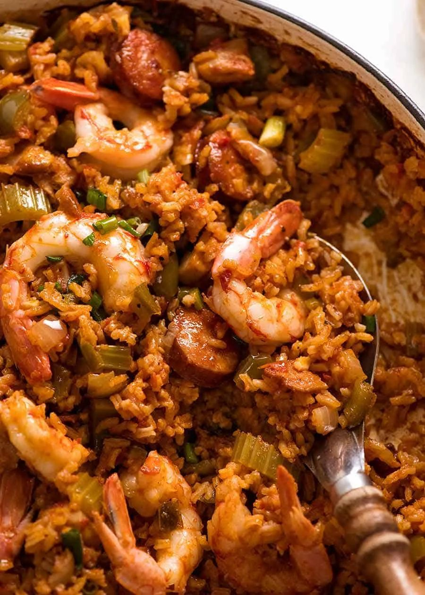

Jambalaya

- Meal
- Dinner
- Serves
- 6
- Protein
- chicken + sausage (shrimp optional)
- Cook
- stovetop + oven · 25 min active / 85 min total · moderate
- Make-ahead / leftovers
- no / yes
- Mediterranean
- no
- WW tier
- moderate
- Status
- Trying out (probation)
Allergy: Shrimp is optional and added only at the very end — scoop the fish-free portion before it goes in, or skip shrimp entirely
RecipeTin Eats' one-pot oven jambalaya — sausage, chicken, the Cajun trinity, tomato, and rice baked covered so it cooks evenly — made mild for kids and switched to brown rice. Cajun night that isn't Red Beans & Brown Rice or Blackened Tilapia.
Ingredients
Seasoning mix
- 5 tsp sweet paprika
- 1 1/4 tsp garlic powder
- 1 1/4 tsp onion powder
- 1/4 tsp cayenne (source uses 1/2 tsp for 5 — cut for kids)
- 1/2 tsp black pepper
- 1/2 tsp salt
- 2 1/2 tsp fresh thyme, or 1 1/4 tsp dried
Jambalaya
- 1 Tbsp oil
- 4 slices smoked bacon, chopped (optional — see Notes)
- 8 oz mild smoked sausage, sliced 1/4-inch thick (not hot andouille)
- 12 oz boneless skinless chicken thighs, 1-inch pieces
- 5 garlic cloves, minced
- 1 Tbsp butter
- 1 large onion, 1/2-inch dice
- 3 celery ribs, 1/2-inch dice
- 2 green bell peppers, 1/2-inch dice
- 1 1/2 cups long-grain brown rice, uncooked
- 4 cups low-sodium chicken broth (more liquid than the source — brown rice)
- 1 cup canned crushed tomatoes
- 2 1/2 Tbsp tomato paste
- 1 1/4 cups sliced green onions, plus more to serve
- Optional: 15 large raw shrimp, peeled
Method
- Heat oven to 350°F. Mix the seasoning.
- In a large oven-safe Dutch oven over medium-high, heat the oil. Cook the bacon 30 seconds, add the sausage, and cook until golden, ~3 minutes. Scoop into a bowl.
- Brown the chicken (it doesn't need to cook through); add to the bowl.
- If using shrimp: sear 1 1/2 minutes per side and set aside in a separate bowl in the fridge.
- Add butter, garlic, onion, celery, and peppers; cook 3–4 minutes.
- Add the brown rice and stir to coat. Add broth, tomato paste, crushed tomatoes, and the seasoning. Stir, then return the meats and their juices.
- When it's bubbling across the surface, stir once more, make sure all the rice is submerged, cover, and move to the oven.
- Bake 45 minutes, then taste a few grains. If still firm, give it 5–10 more minutes (add a splash of broth if it looks dry).
- Scoop the fish-free portion now. Then stir in the shrimp and green onions, cover, and bake 3 minutes more just to heat the shrimp. Fluff and serve.
Notes
- Scaled ×1.25 from RecipeTin's serves-5. House rule: brown rice — Nagi's recipe uses white long-grain rice with 2.5 cups broth and ~25–30 minutes. Brown rice needs ~2.5 parts liquid and ~45–50 minutes; the broth and bake time above are adjusted for that. First make, check at 40.
- Kid heat: cayenne cut in half and mild smoked sausage instead of andouille. Hot sauce at the table.
- Bacon is optional; the sausage already gives smoke. With bacon + sausage this is two processed meats in one pot — counts as a processed-meat main for the week's red/processed cap (≤2).
- Fish-free swap: shrimp is optional and goes in last. Pull the fish-free bowl before step 9, or leave the shrimp out and it's a plain chicken-and-sausage jambalaya for everyone.
- Mediterranean ✗: sausage/bacon, butter. moderate.